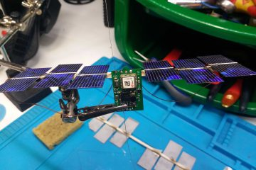
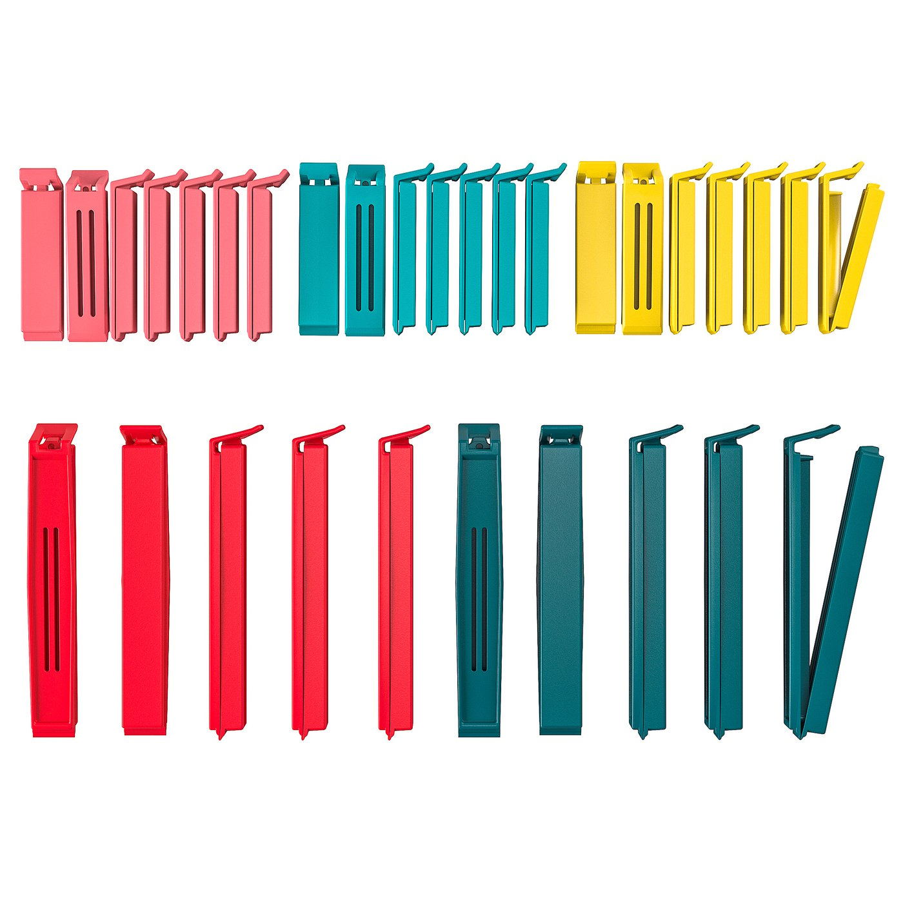

ICSPACE21: Flight to Japan and ICSPACE20
from the archive
[ 1 photo didn’t survive the archive ]
This article describes two high altitude balloon flights in August/September 2020. ICSPACE20 was launched on 22 August 2020 and was last heard over Denmark. ICSPACE21, launched on 4 September 2020, was last heard over Japan six days later, floating at 10400m altitude. This is our longest flight in terms of distance, covering 10000km+.
ICSPACE21 was launched at 0740h in the morning from our usual launch site in Fryent Country Park in London, UK. There was very little wind, allowing a near vertical rise of the balloon. The sun was obscured by clouds at launch, but there was just enough sunlight to power up the tracker’s LEDs, indicating the tracker was working as expected. The launch was uneventful.
[ 1 photo didn’t survive the archive ]
The first data we received from the tracker was 40 minutes later, as the sun broke through the clouds. The balloon settled at 10300m by the end of the day and was last heard for the day at 17:47 BST over Poland as the sun went down.

The tracker woke up over Moldova the next day, passing through parts of Ukraine and Romania during the day. Coverage was spottier than the previous day, as the transmissions were only picked up by one or two LoRaWAN gateways over this region.
Unfortunately, it was not heard the next day, and the next 5 days. I feared the worst. Astonishingly, ICSPACE21 reappeared over Hokkaido Japan, with a SINGLE transmission picked up by a single gateway.
[ 1 photo didn’t survive the archive ]
The raw data for that packet is as follows: It contains both the data from tracker as well as meta data from gateway.
{
"app_id":"icss_lora_tracker",
"dev_id":"icspace21",
"hardware_serial":"00ABDF8A62F5C181",
"port":99,
"counter":3282,
"payload_raw":"AHMH2AFnAB8CiAacKBWrwg/uIAMCJSYEAQU=",
"payload_fields":{
"analog_in_3":95.1,
"barometric_pressure_0":200.8,
"digital_out_4":5,
"gps_2":{
"altitude":10440,
"latitude":43.3192,
"longitude":142.0226
},
"temperature_1":3.1
},
"metadata":{
"time":"2020-09-10T22:50:39.147818932Z",
"frequency":923.2,
"modulation":"LORA",
"data_rate":"SF8BW125",
"airtime":154112000,
"coding_rate":"4/5",
"gateways":[
{
"gtw_id":"eui-0000271dbf884150",
"timestamp":2862402116,
"time":"2020-09-10T22:50:38.989834Z",
"channel":0,
"rssi":-127,
"snr":-9.2,
"rf_chain":0
}
]
}
}
Looking up the particular gateway that picked up this packet, we can confirm that the tracker was transmitting at the correct regional frequency band, AS920-923. This validates that the geofencing code on the tracker works, allowing it to switch its transmit frequency plans to match local frequency plans. When over Europe, it uses EU868 frequencies, AS923 in Japan, US915 in North America and so on. The raw information about this gateway in Japan is as follows:
{
"eui-0000271dbf884150": {
"id": "eui-0000271dbf884150",
"description": "ロケーションマインド HYKTA-FM #7",
"owner": "thamada",
"owners": [
"thamada"
],
"location": {
"latitude": 35.69546002,
"longitude": 139.77728406,
"altitude": 0
},
"country_code": "jp",
"attributes": {
"brand": "MultiTech",
"frequency_plan": "AS_920_923",
"model": "Conduit",
"placement": "indoor"
},
"last_seen": "2020-10-06T19:32:55Z"
}
}
Location listed on the gateway indicates that it is in Tokyo but it is not likely since the location of the balloon was at least 500km away, out of line of sight.
Sadly, this was the last time we heard from ICSPACE21. Hysplit predictions indicated that it would reach America 3 days later but failed to turn up. As of today 6/10/2020, more than 23 days since last heard from, it has not been picked up anywhere else in the world. It is possible that it crashed somewhere over the Pacific.
On further investigation, even if it made it to America, it is likely that none of its transmissions may have been picked up, due to incorrect radio settings for use in The Things Network US915 frequency plans. The tracker was set to use 64 channels while it turns out, most American gateways can only pick up data on 8 channels.
Therefore, it is possible that the tracker did make it to America. However, it never made it back to Europe, where there is excellent LoRaWAN coverage. The balloon could have come down somewhere between Japan and Europe. I am inclined to think there was nothing wrong with the balloon. It was just flying too low (10400m ASL) to avoid the weather below, and eventually encountered some storms along the way. The flight altitude after 6 days was unchanged, indicating balloon envelope integrity. No leaks.
Also notable is the fact that we never heard from ICSPACE21 on its leg between Romania and Japan. It would have crossed parts of Central Asia, Russia and China but had no LoRaWAN coverage. It is likely that there is simply no coverage between Europe and Japan.
Reflections on Prestretching balloons
Why are we prestretching the balloons? Quoting TT7 in his excellent blog resource: http://tt7hab.blogspot.com/2017/11/
There are three reasons for pressurizing newly manufactured balloons. First, to verify that the envelope was properly sealed and that the welds hold at expected stresses. I consider this mandatory. Second, to relieve localized stress concentrations in the welds and the film itself. This is highly recommended. And the third reason is optional and consists of carrying on the plastic deformations to further increase the envelope’s volume.
TT7 on his blog
The final and fourth reason is given by Steve Randall, referencing Dan Bowman:
The aim of the pre-stretching was to stretch the material to the point it will be stretched in flight – but under warmer conditions where the material is more ductile. In flight its a lot colder the material less ductile and more likely to fracture during stretching.
Steve Randall
In both ICSPACE20 and 21, the balloons were prestretched by connecting a sillicone tube from balloon mouth to an aquarium pump(ebay listing), with a manometer inline(ebay listing) to monitor internal pressure. Initially, to full the balloon up to its nominal volume, I used the exhaust end of a vaccum cleaner to inflate the balloon. Then I connected the sillicone tube from pump to balloon and filled it to its target pressure, stopping the pump and sealing the tube simultaneously. Note that I set the aquarium pump to maximum power/flow rate, controlled by the knob on it. I then left the balloons in its pressurised state for 24 hours before opening its valve back up.
[ 1 photo didn’t survive the archive ]
ICSPACE20, which disappeared after the first night, was stretched to 0.600psi. It is not clear if it burst overnight or just went out of LoRaWAN coverage, over Russia. It never reappeared though, indicating that it must have eventually burst.
ICSPACE2, stretched to 0.591psi was seen over Japan heading East, six days after launch. However, it never reappeared over Europe. It must have burst later, or came down in bad weather.
While testing, I was finding that some balloons seem to be fully stretched out by 0.590psi but not others. By fully stretched I mean that there are almost no wrinkles along the seam of the balloon. Others seem to still have long wrinkles even at 0.600psi(see picture below). Another balloon I balloon stretched to 0.600psi burst soon after inflating while I was moving it. I had stopped inflating it when it reached this pressure and sealed it off. It must have been at its unstable limit and blew up.
[ 1 photo didn’t survive the archive ]
My feeling is that the longer wrinkles at such high pressures at 0.600psi indicate that the balloon has still has some leeway to stretch and is not near the limit, and can handle the pressure well. Below is a picture showing longer wrinkles on another balloon. Note that I did not record what pressure it was inflated to in that particular picture. ICSPACE21 had quite long wrinkles, around 6-7 cm long each side of the seam at its peak pressure of 0.591psi
[ 1 photo didn’t survive the archive ]
I also suspect that the balloon endures permenant damage by prestretching it to 0.600psi, that may cause premature failure in the air. ICSPACE20 seemed to have burst overnight, prematurely. It was prestretched to 0.600psi. Stretching to only 0.590psi may be safer as was done to ICSPACE21 which survived at least 6 days.
Pre launch instructions used on both flights
Here is the instructions recording the steps used during filling of the balloon, to serve as a record for future reference.
Emptying the balloon
[ 1 photo didn’t survive the archive ]
Before filling the balloon, the objective is to completely evacuvate ALL residual air from inside the balloon.
Completely empty out all air from inside envelop by placing a sillicone tube into the balloon, and using a vaccum cleaner to suck out the air inside. The end of the tube can sit around the center of the balloon. The balloon should absolutely have no air inside after sucking. Slowly pull the tube out after turning off the vaccum cleaner. This will allow the tube to slide out more easily as the balloon film will not be clinging on to the tube as tightly. Now when the tube is at the mouth of the balloon, again restart the vaccum to suck all the air out that entered when removing the tube. Finally, use the IKEA sealing clip to seal the balloon.

Filling
Connect sillicone tube to the helium/hydrogen source. Then place the tube into the mouth of the balloon. At this point, the IKEA clip should still be sealing the balloon. Now remove the clip and start filling. The IKEA clip should weigh the weight of payload + netlift. A blob of Bluetac should be attached to the clip to make up the target weight(see picture below). Try to keep the IKEA clip roughly clipped onto the neck of the balloon so that you can fill with lifting gas and immediately check if it has achieved neutral bouyancy. The target is to achieve neutral buoyancy. Once target is reached, ensure that the neck of the balloon is sealed with the IKEA clip. The balloon can be placed aside to prepare for permanent sealing.
[ 1 photo didn’t survive the archive ]
Sealing
I would highly recommend testing the sealing procedure on another balloon before committing to seal on the flight ready balloon. The seal has to prevent lifting gas from escaping from the balloon, and must NOT add additional holes to leak air out. I use a clothing iron and directly iron the plastic neck. However, different irons have different temperatures so it is best to see the sealing performance on another balloon before trying on the launch balloon. Some people recommend placing a baking sheet over the plastic before ironing(e.g. Eduard Voiculescu). Once confident about iron sealing, go ahead and iron the neck.
Tying the string
[ 1 photo didn’t survive the archive ]
I use a 0.08mm dyneema fishing string(purchase listing) that is very light and incredibly strong. I usually iron and seal most of the neck of the balloon with a clothing iron.
I then tie the plastic valve into a knot, intertwining the dyneema string within the knot(refer to picture above). The reason for this unusual knot is the dyneema string can be highly abrasive and can easily slice through the plastic. Therefore, I try to spread the load at the dyneema string/plastic interface such that the dyneema string cannot slice through the balloon plastic. I use 3-4 knots to tie the dyneema string. The string is highly slippery and needs several knots. I would then cut the excess plastic below the dyneema string knot as that is excess dead weight.
[ 1 photo didn’t survive the archive ]
Image taken from https://www.my-best-kite.com/larks-head-knot.html
Once the string is tied, I would tie the other end of the string into a loop. This loop will be used to tie a Larks Head knot(link, link) between the tracker string and balloon(see image above). This would make attaching the tracker to balloon at launch site easier, and can be done as the very last step before launch.
Pre-launch advice
An overcast sky is not an issue for launch, although not ideal. What we need to look out for is precipitation along the flight path. I usually use Windy.tv to check rain in the region. I normally avoid launching if there is precipitation in the British Isles and Western Europe. Any water on the balloon envelop will bring it down.
A launch just as the sun comes up is also ideal. I find that winds are lowest in the mornings, and we will hear from the balloon in less than 1 hour after launch and get a full day of sunlight.
The tracker has an indicator LED which will be useful in checking for signs of life. At power up, only the MCU and LED will power up, drawing very little current which means it can come to life with very little sunlight. Following that, the GPS with higher power requirements will power up. It may brown out at this point if there is too little sunlight.
Key information
ICSPACE20
[ 1 photo didn’t survive the archive ]
- Ironed over the flaw in the balloon edge, sealing it
- Prestretched to 0.600psi in one shot and sealed(temporarily). 40 minutes fill time and full power on aquarium pump.
- Trimmed off excess plastic around balloon. This was done with moving the knife, not the balloon.
- Survived 1 day, not heard next day. May have crashed over night or later. It was predicted to enter areas of low LoRaWAN coverage so it may have indeed been flying for a while. Never heard from again.
- Floated at 10200m
- Tracker weight: 6 grams
- Net lift: 5 grams
- Balloon: Aliexpress party balloon
- Lifting gas is Card Factory helium
ICSPACE21:
[ 1 photo didn’t survive the archive ]
- Ironed over the flaw in the balloon edge, sealing it
- Prestretched to 0.591psi in one shot and sealed(temporarily). 40 minutes fill time and full power on aquarium pump .
- Trimmed off excess plastic around balloon. This was done with moving the balloon while holding the knife in place. Different from how it was done on ICSPACE20.
- Survived 6 days, last seen over Japan. May have crashed over the Pacific ocean. Not heard from since.
- Floated at 10400m
- Tracker weight: 6 grams
- Net lift: 5 grams
- Balloon: Aliexpress party balloon
- Lifting gas is Card Factory helium